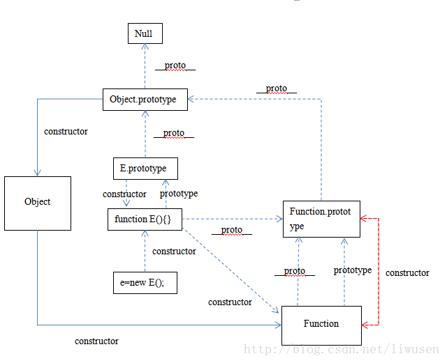
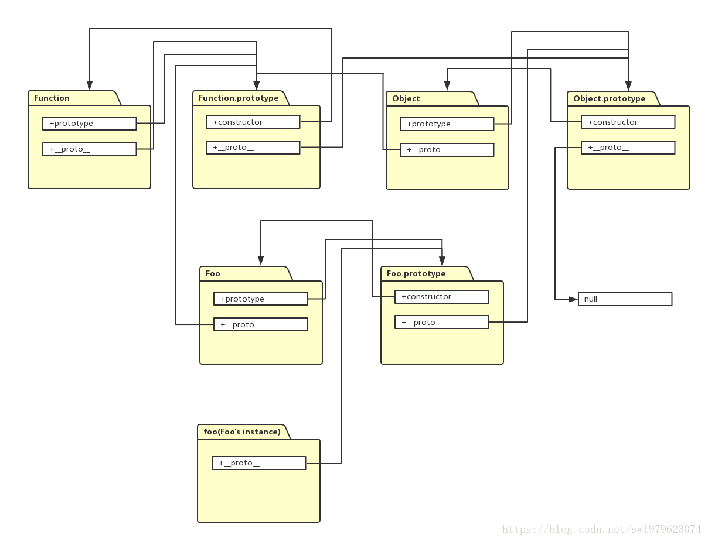

原型
基本数据型：string number boolean object null undefined symbol array Object
引用(构造函数)：String Number Boolean Object Function Array Date RegExp Error
构造函数都是函数 所以:
- (String/Number/...).constructor === Function
- (String/Number/...).__proto__ === Function.prototype
- (String/Number/...).__proto__.__proto__ === Object.prototype
- Object.contructor === Function

*顺便还要说一下，图中由相互关联的原型组成的链状结构就是原型链，也就是蓝色的这条线。


1、getPrototypeOf ———— Object.getPrototypeOf(obj);
- 查看obj的原型 相当于浏览器提供的 __poroto__；
2、setPrototypeOf ———— Object.setPrototypeOf(obj1, obj2);
- obj1.__proto__ === obj2
- 把obj2 设为 obj1 的原型
3、isPrototypeOf ———— object1.isPrototypeOf(object2);
- object1是一个对象的实例；
- object2是另一个将要检查其原型链的对象。
4、hasOwnProperty / in ———— object.hasOwnProperty(proName);
- in判断的是对象的所有属性，包括对象实例及其原型的属性；
- 而hasOwnProperty则是判断对象实例的本身是否具有某个属性(不包括继承属性)。